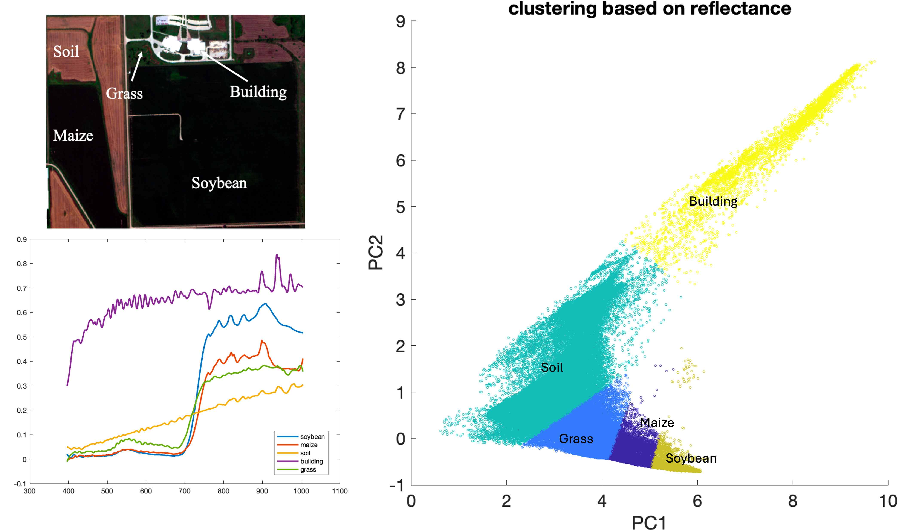
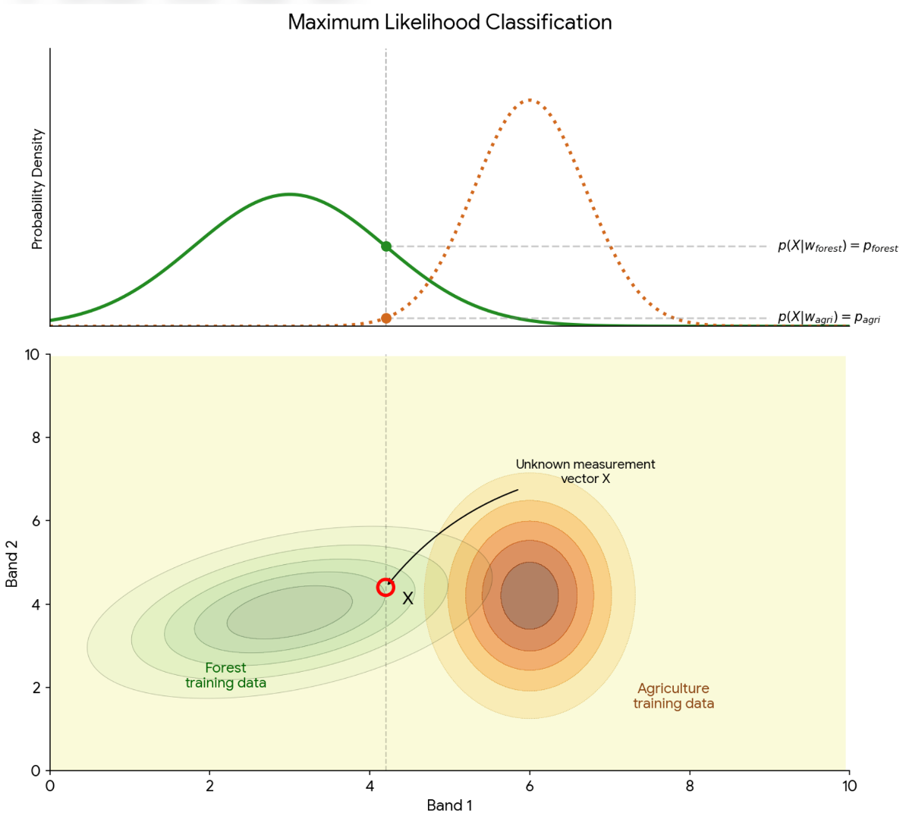
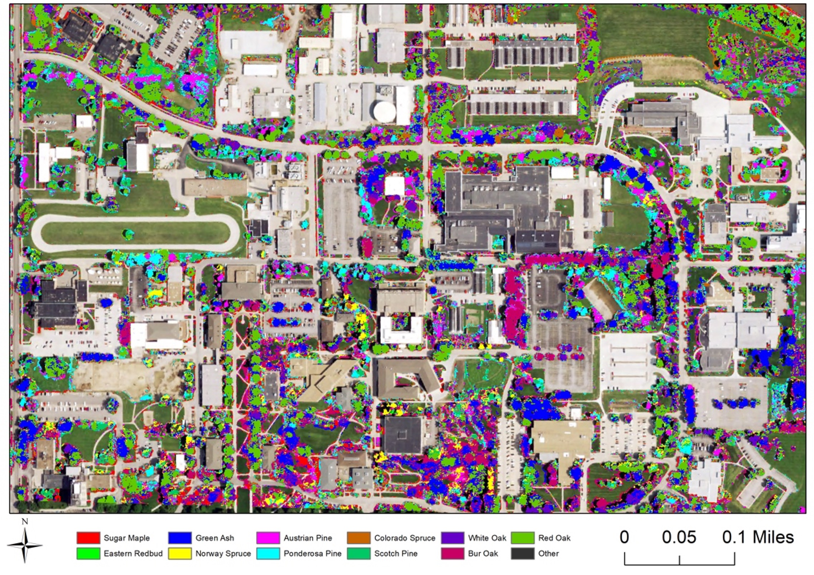
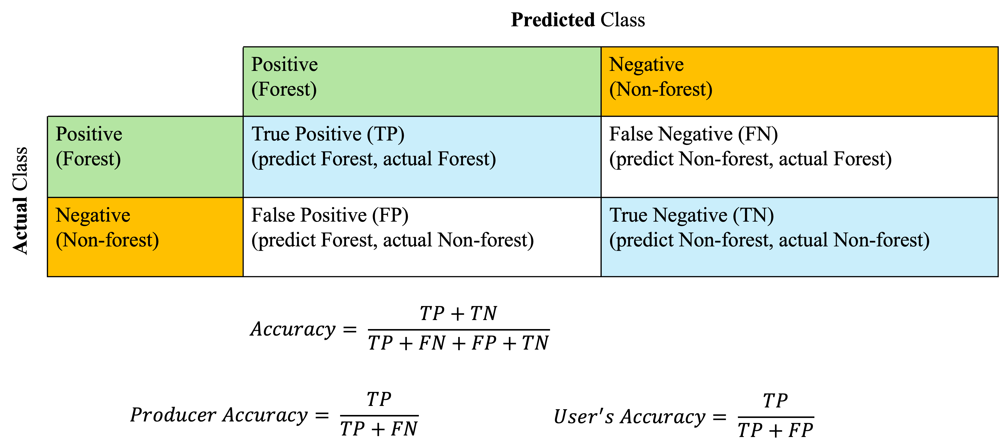

18 Remote Sensing Image Classification
One of the most interesting aspects of the world is that it can be considered to be made up of patterns. … A pattern is essentially an arrangement. It is characterized by the order of the elements of which it is made, rather than by the intrinsic nature of these elements. - Norbert Wiener
Explain the purpose of image classification
Distinguish between supervised and unsupervised classification approaches
Describe how spectral signatures are used to assign pixels to classes
Interpret classification results
Remote sensing image classification is the process of assigning labels (such as land cover classes) to pixels based on their spectral characteristics. This allows continuous image data to be converted into meaningful categories (Figure 18.1; also think about the categorical data we discussed in the raster data model section). This process relies on two key assumptions: First, different surface features have distinct spectral reflectance properties (spectral signatures), which allow them to be distinguished from one another. Second, the spectral response of a given feature is assumed to be sufficiently consistent within an image so that pixels representing the same class can be grouped together.

In practice, however, these two assumptions are not always valid. Spectral responses can vary due to factors such as illumination conditions, atmospheric effects, seasonal changes, and differences in surface properties. As a result, spectral signatures are not perfectly unique or constant. Different materials may exhibit similar spectral responses, and the same feature can vary depending on factors such as lighting conditions, moisture content, seasonal changes, and sensor characteristics. As a result, spectral signatures should be understood as general patterns rather than exact fingerprints.
Because of this variability and overlap, classification methods group pixels based on similarities in their spectral responses, often using statistical or rule-based approaches. Moreover, classification methods must account for some level of variability and uncertainty. Despite these challenges, classification remains a fundamental technique in remote sensing, enabling the creation of thematic maps that support a wide range of geospatial applications, including land cover mapping, environmental monitoring, and resource management.
The two common approaches used for image classification are unsupervised and supervised classification. While unsupervised classification groups pixels into clusters automatically based on their spectral similarity, supervised classification relies on users providing example samples (training data) to “train” the classification.
18.1 Unsupervised classification
Unsupervised classification (sometimes also called clustering analysis) generates classes or clusters based on similar spectral characteristics inherent in the remote sensing data. The classification algorithm automatically segregates pixels into groups of similar spectral properties Figure 18.2. Common unsupervised classification methods include k-mean (or Iterative Self-Organizing Data Analysis Technique (ISO-DATA), a modified k-mean algorithm), Density Based Spatial Clustering of Applications with Noise (DBSCAN), probabilistic clustering, hierarchical clustering etc. It is worth noting that because these clustering algorithms apply various assumptions about the shape of the clusters and rely on fundamentally different methods forming clusters, it is possible and common for these methods to produce different results even applied to the same dataset. Selection of the right or “best” algorithm depends on the application and data.

18.2 Supervised classification
Supervised classification categorizes pixels in an image based on examples provided by the user. This approach begins by selecting training data e.g., areas in the image where the correct land cover type is already known. These training data act as references that represent different classes, such as water, vegetation, or urban areas. Using these known samples, the classification algorithm learns the unique patterns of reflectance (spectral signature) associated with each class. The algorithm then uses this information to “train” a model by adjusting its internal parameters so it can recognize similar patterns elsewhere in the image. Once the model is trained, it is applied to the entire image. Each pixel is analyzed and compared to the training data, and the algorithm assigns it to the class it most closely matches based on its reflectance characteristics. In this way, supervised classification allows us to systematically label and map land cover types across an image.
In supervised classification, similarity is typically defined as either the distance or probability connecting an unknown point to a known group based on their reflectance spectra. The Minimum Distance approach defines similarity as the shortest linear distance (e.g., Euclidean distance) between an unknown pixel and the average spectral value, or “centroid,” of a training class. The pixels are classified to the nearest class. This approach is computationally efficient but ignores the internal variation of the data. In contrast, the Maximum Likelihood classifier adopts a more sophisticated statistical definition of similarity by incorporating both the mean and the covariance (the spread and shape) of the training data. By calculating the probability that a pixel belongs to a specific class’s distribution (assuming data is normally distributed), Maximum Likelihood assigns pixels to the category where they have the highest statistical “fit” or the highest probability (Figure 3).

Common supervised classification methods include support vector machine (SVM), decision tree, random forest, neural network (including convolutional neural network and deep learning).
Support Vector Machine (SVM) – tries to find the best boundary (called a decision boundary) between different classes. For example, SVM separates land cover types (like forest vs. urban) by maximizing the distance between classes in feature space (such as spectral bands). One advantage of SVM is that it works well even with limited training data and can handle complex class boundaries using kernel functions.
Random Forest (RF) – builds many (hundreds of) “decision trees” and combines their results. Each tree makes a classification, and the final class is chosen by majority vote. Currently, RF is one of the most popular classification methods in remote sensing, because it handles noisy data well, works with many input variables (like multiple spectral bands), and is relatively easy to use Figure 18.4.

While SVM and RF are “pixel-based” (classify one pixel at one time), deep learning methods, such as Convolutional Neural Networks (CNNs), take classification a step further by automatically learning complex patterns directly from image data. Instead of just using pixel values, CNNs can recognize spatial patterns like textures and shapes. This is especially useful for tasks like land cover mapping or object detection. These deep learning methods can be very powerful, but they usually require large amounts of training data, more computing power, and are more complex to set up compared to SVM or RF.
18.3 Evaluate classification model performance
Cross-validation is a technique used to evaluate how well a classification model will perform on new, unseen data. Instead of testing the model on the same data used for training, the dataset is divided into separate training and validation (testing) subsets. This helps reduce overfitting and gives a more realistic measure of model accuracy. There two types of cross validation, including Exhaustive Cross-Validation and Non-Exhaustive Cross-Validation.
Exhaustive methods try all possible ways of splitting the dataset into training and validation sets. Because they test every possible combination, they provide very thorough results, but they can be computationally expensive.
Leave-p-out: A method where p samples are left out for validation, and the rest are used for training.
Leave-one-out (LOOCV): A special case of leave-p-out where only one sample is left out at a time. This is repeated for every data point in the dataset.
In contrast, non-exhaustive methods use only some of the possible splits, making them faster and more practical for large datasets.
k-fold cross-validation: The dataset is divided into k equal parts (folds). The model is trained on k–1 folds and tested on the remaining fold. This process is repeated k times so each fold is used once for validation.
Holdout method: The dataset is split once into a training set and a validation set (for example, 75% training and 25% testing). This is the simplest approach but can be less reliable because it depends on a single split.
Confusion matrix - A confusion matrix is a table used to evaluate how well a classification model performs. It compares the actual (reference) classes with the predicted classes from your model. For example, in a two classes classification model identifying forest (positive) and non-forest (negative) pixels, the classification results can be shown in a confusion matrix (Figure 5). Then the classification accuracy can be derived from the confusion matrix.

It is worth noting that the overall accuracy may not always capture the performance of the model, because the accuracy is sensitive to variations in class abundance. For example, in the case of a binary landcover type classification (two type involved), if one type of landcover is rare, a high accuracy could be achieved by assigning all the pixels to the dominant or more abundant landcover type but the produced landcover map does not represent the true landcover distribution at all! To address this challenge, per-class accuracy metrics are proposed including the producer’s accuracy (Of all actual pixels belonging to this class, how many did the model correctly classify?) and user’s accuracy (Of all pixels the model labeled as this class, how many actually belong to it?). Another metric that has been popular is the kappa coefficient, which is assumed to be useful when class distributions are balanced. However, a relatively recent study (Foody 2020) argued that the kappa coefficient could be misleading and hard to interpret, making this metric less informative than it is assumed to be.
Image classification is evolving rapidly in the recent years. This progress is driven by the availability of multisource (e.g., hyperspectral, LiDAR, RADAR) and high spatial resolution data from modern sensors and as well as advances in deep learning and computer vision algorithms. However, we should have “a healthy skepticism regarding studies that purport to demonstrate the overall superiority of a particular learning or recognition algorithm” (Duda et al. 2001).
Finally, designing a good classifier requires A LOT of experience and practices.
18.4 References
Duda, R. O., Hart, P. E., & Stork, D. G. (2001). Pattern classification (2nd ed.). Wiley.
Foody GM. Explaining the unsuitability of the kappa coefficient in the assessment and comparison of the accuracy of thematic maps obtained by image classification. Remote Sensing of Environment. 2020;239:111630.